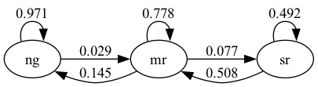
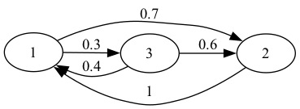

35. Networks#
!pip install quantecon-book-networks pandas-datareader
Show output
Requirement already satisfied: quantecon-book-networks in /usr/share/miniconda3/envs/quantecon/lib/python3.11/site-packages (1.1)
Requirement already satisfied: pandas-datareader in /usr/share/miniconda3/envs/quantecon/lib/python3.11/site-packages (0.10.0)
Requirement already satisfied: numpy in /usr/share/miniconda3/envs/quantecon/lib/python3.11/site-packages (from quantecon-book-networks) (1.24.3)
Requirement already satisfied: scipy in /usr/share/miniconda3/envs/quantecon/lib/python3.11/site-packages (from quantecon-book-networks) (1.11.1)
Requirement already satisfied: pandas in /usr/share/miniconda3/envs/quantecon/lib/python3.11/site-packages (from quantecon-book-networks) (2.0.3)
Requirement already satisfied: matplotlib in /usr/share/miniconda3/envs/quantecon/lib/python3.11/site-packages (from quantecon-book-networks) (3.7.2)
Requirement already satisfied: networkx in /usr/share/miniconda3/envs/quantecon/lib/python3.11/site-packages (from quantecon-book-networks) (3.1)
Requirement already satisfied: quantecon in /usr/share/miniconda3/envs/quantecon/lib/python3.11/site-packages (from quantecon-book-networks) (0.7.1)
Requirement already satisfied: POT in /usr/share/miniconda3/envs/quantecon/lib/python3.11/site-packages (from quantecon-book-networks) (0.9.3)
Requirement already satisfied: lxml in /usr/share/miniconda3/envs/quantecon/lib/python3.11/site-packages (from pandas-datareader) (4.9.3)
Requirement already satisfied: requests>=2.19.0 in /usr/share/miniconda3/envs/quantecon/lib/python3.11/site-packages (from pandas-datareader) (2.31.0)
Requirement already satisfied: python-dateutil>=2.8.2 in /usr/share/miniconda3/envs/quantecon/lib/python3.11/site-packages (from pandas->quantecon-book-networks) (2.8.2)
Requirement already satisfied: pytz>=2020.1 in /usr/share/miniconda3/envs/quantecon/lib/python3.11/site-packages (from pandas->quantecon-book-networks) (2023.3.post1)
Requirement already satisfied: tzdata>=2022.1 in /usr/share/miniconda3/envs/quantecon/lib/python3.11/site-packages (from pandas->quantecon-book-networks) (2023.3)
Requirement already satisfied: charset-normalizer<4,>=2 in /usr/share/miniconda3/envs/quantecon/lib/python3.11/site-packages (from requests>=2.19.0->pandas-datareader) (2.0.4)
Requirement already satisfied: idna<4,>=2.5 in /usr/share/miniconda3/envs/quantecon/lib/python3.11/site-packages (from requests>=2.19.0->pandas-datareader) (3.4)
Requirement already satisfied: urllib3<3,>=1.21.1 in /usr/share/miniconda3/envs/quantecon/lib/python3.11/site-packages (from requests>=2.19.0->pandas-datareader) (1.26.16)
Requirement already satisfied: certifi>=2017.4.17 in /usr/share/miniconda3/envs/quantecon/lib/python3.11/site-packages (from requests>=2.19.0->pandas-datareader) (2023.7.22)
Requirement already satisfied: contourpy>=1.0.1 in /usr/share/miniconda3/envs/quantecon/lib/python3.11/site-packages (from matplotlib->quantecon-book-networks) (1.0.5)
Requirement already satisfied: cycler>=0.10 in /usr/share/miniconda3/envs/quantecon/lib/python3.11/site-packages (from matplotlib->quantecon-book-networks) (0.11.0)
Requirement already satisfied: fonttools>=4.22.0 in /usr/share/miniconda3/envs/quantecon/lib/python3.11/site-packages (from matplotlib->quantecon-book-networks) (4.25.0)
Requirement already satisfied: kiwisolver>=1.0.1 in /usr/share/miniconda3/envs/quantecon/lib/python3.11/site-packages (from matplotlib->quantecon-book-networks) (1.4.4)
Requirement already satisfied: packaging>=20.0 in /usr/share/miniconda3/envs/quantecon/lib/python3.11/site-packages (from matplotlib->quantecon-book-networks) (23.1)
Requirement already satisfied: pillow>=6.2.0 in /usr/share/miniconda3/envs/quantecon/lib/python3.11/site-packages (from matplotlib->quantecon-book-networks) (9.4.0)
Requirement already satisfied: pyparsing<3.1,>=2.3.1 in /usr/share/miniconda3/envs/quantecon/lib/python3.11/site-packages (from matplotlib->quantecon-book-networks) (3.0.9)
Requirement already satisfied: numba>=0.49.0 in /usr/share/miniconda3/envs/quantecon/lib/python3.11/site-packages (from quantecon->quantecon-book-networks) (0.57.1)
Requirement already satisfied: sympy in /usr/share/miniconda3/envs/quantecon/lib/python3.11/site-packages (from quantecon->quantecon-book-networks) (1.11.1)
Requirement already satisfied: llvmlite<0.41,>=0.40.0dev0 in /usr/share/miniconda3/envs/quantecon/lib/python3.11/site-packages (from numba>=0.49.0->quantecon->quantecon-book-networks) (0.40.0)
Requirement already satisfied: six>=1.5 in /usr/share/miniconda3/envs/quantecon/lib/python3.11/site-packages (from python-dateutil>=2.8.2->pandas->quantecon-book-networks) (1.16.0)
Requirement already satisfied: mpmath>=0.19 in /usr/share/miniconda3/envs/quantecon/lib/python3.11/site-packages (from sympy->quantecon->quantecon-book-networks) (1.3.0)
35.1. Outline#
In recent years there has been rapid growth in a field called network science.
Network science studies relationships between groups of objects.
One important example is the world wide web , where web pages are connected by hyperlinks.
Another is the human brain: studies of brain function emphasize the network of connections between nerve cells (neurons).
Artificial neural networks are based on this idea, using data to build intricate connections between simple processing units.
Epidemiologists studying transmission of diseases like COVID-19 analyze interactions between groups of human hosts.
In operations research, network analysis is used to study fundamental problems as on minimum cost flow, the traveling salesman, shortest paths, and assignment.
This lecture gives an introduction to economic and financial networks.
Some parts of this lecture are drawn from the text https://networks.quantecon.org/ but the level of this lecture is more introductory.
We will need the following imports.
import numpy as np
import networkx as nx
import matplotlib.pyplot as plt
import pandas as pd
import quantecon as qe
import matplotlib.cm as cm
import quantecon_book_networks.input_output as qbn_io
import quantecon_book_networks.data as qbn_data
import matplotlib.patches as mpatches
35.2. Economic and financial networks#
Within economics, important examples of networks include
financial networks
production networks
trade networks
transport networks and
social networks
Social networks affect trends in market sentiment and consumer decisions.
The structure of financial networks helps to determine relative fragility of the financial system.
The structure of production networks affects trade, innovation and the propagation of local shocks.
To better understand such networks, let’s look at some examples in more depth.
35.2.1. Example: Aircraft Exports#
The following figure shows international trade in large commercial aircraft in 2019 based on International Trade Data SITC Revision 2.
Show source
ch1_data = qbn_data.introduction()
export_figures = False
DG = ch1_data['aircraft_network']
pos = ch1_data['aircraft_network_pos']
centrality = nx.eigenvector_centrality(DG)
node_total_exports = qbn_io.node_total_exports(DG)
edge_weights = qbn_io.edge_weights(DG)
node_pos_dict = pos
node_sizes = qbn_io.normalise_weights(node_total_exports,10000)
edge_widths = qbn_io.normalise_weights(edge_weights,10)
node_colors = qbn_io.colorise_weights(list(centrality.values()),color_palette=cm.viridis)
node_to_color = dict(zip(DG.nodes,node_colors))
edge_colors = []
for src,_ in DG.edges:
edge_colors.append(node_to_color[src])
fig, ax = plt.subplots(figsize=(10, 10))
ax.axis('off')
nx.draw_networkx_nodes(DG,
node_pos_dict,
node_color=node_colors,
node_size=node_sizes,
linewidths=2,
alpha=0.6,
ax=ax)
nx.draw_networkx_labels(DG,
node_pos_dict,
ax=ax)
nx.draw_networkx_edges(DG,
node_pos_dict,
edge_color=edge_colors,
width=edge_widths,
arrows=True,
arrowsize=20,
ax=ax,
arrowstyle='->',
node_size=node_sizes,
connectionstyle='arc3,rad=0.15')
plt.show()

Fig. 35.1 Commercial Aircraft Network#
The circles in the figure are called nodes or vertices – in this case they represent countries.
The arrows in the figure are called edges or links.
Node size is proportional to total exports and edge width is proportional to exports to the target country.
(The data is for trade in commercial aircraft weighing at least 15,000kg and was sourced from CID Dataverse.)
The figure shows that the US, France and Germany are major export hubs.
In the discussion below, we learn to quantify such ideas.
35.2.2. Example: A Markov Chain#
Recall that, in our lecture on Markov chains we studied a dynamic model of business cycles where the states are
“ng” = “normal growth”
“mr” = “mild recession”
“sr” = “severe recession”
Let’s examine the following figure
This is an example of a network, where the set of nodes \(V\) equals the states:
The edges between the nodes show the one month transition probabilities.
35.3. An introduction to graph theory#
Now we’ve looked at some examples, let’s move on to theory.
This theory will allow us to better organize our thoughts.
The theoretical part of network science is constructed using a major branch of mathematics called graph theory.
Graph theory can be complicated and we will cover only the basics.
However, these concepts will already be enough for us to discuss interesting and important ideas on economic and financial networks.
We focus on “directed” graphs, where connections are, in general, asymmetric (arrows typically point one way, not both ways).
E.g.,
bank \(A\) lends money to bank \(B\)
firm \(A\) supplies goods to firm \(B\)
individual \(A\) “follows” individual \(B\) on a given social network
(“Undirected” graphs, where connections are symmetric, are a special case of directed graphs — we just need to insist that each arrow pointing from \(A\) to \(B\) is paired with another arrow pointing from \(B\) to \(A\).)
35.3.1. Key definitions#
A directed graph consists of two things:
a finite set \(V\) and
a collection of pairs \((u, v)\) where \(u\) and \(v\) are elements of \(V\).
The elements of \(V\) are called the vertices or nodes of the graph.
The pairs \((u,v)\) are called the edges of the graph and the set of all edges will usually be denoted by \(E\)
Intuitively and visually, an edge \((u,v)\) is understood as an arrow from node \(u\) to node \(v\).
(A neat way to represent an arrow is to record the location of the tail and head of the arrow, and that’s exactly what an edge does.)
In the aircraft export example shown in Fig. 35.1
\(V\) is all countries included in the data set.
\(E\) is all the arrows in the figure, each indicating some positive amount of aircraft exports from one country to another.
Let’s look at more examples.
Two graphs are shown below, each with three nodes.
Fig. 35.2 Poverty Trap#
We now construct a graph with the same nodes but different edges.
Fig. 35.3 Poverty Trap#
For these graphs, the arrows (edges) can be thought of as representing positive transition probabilities over a given unit of time.
In general, if an edge \((u, v)\) exists, then the node \(u\) is called a direct predecessor of \(v\) and \(v\) is called a direct successor of \(u\).
Also, for \(v \in V\),
the in-degree is \(i_d(v) = \) the number of direct predecessors of \(v\) and
the out-degree is \(o_d(v) = \) the number of direct successors of \(v\).
35.3.2. Digraphs in Networkx#
The Python package Networkx provides a convenient data structure for representing directed graphs and implements many common routines for analyzing them.
As an example, let us recreate Fig. 35.3 using Networkx.
To do so, we first create an empty DiGraph object:
G_p = nx.DiGraph()
Next we populate it with nodes and edges.
To do this we write down a list of all edges, with poor represented by p and so on:
edge_list = [('p', 'p'),
('m', 'p'), ('m', 'm'), ('m', 'r'),
('r', 'p'), ('r', 'm'), ('r', 'r')]
Finally, we add the edges to our DiGraph object:
for e in edge_list:
u, v = e
G_p.add_edge(u, v)
Alternatively, we can use the method add_edges_from.
G_p.add_edges_from(edge_list)
Adding the edges automatically adds the nodes, so G_p is now a
correct representation of our graph.
We can verify this by plotting the graph via Networkx with the following code:
fig, ax = plt.subplots()
nx.draw_spring(G_p, ax=ax, node_size=500, with_labels=True,
font_weight='bold', arrows=True, alpha=0.8,
connectionstyle='arc3,rad=0.25', arrowsize=20)
plt.show()

The figure obtained above matches the original directed graph in Fig. 35.3.
DiGraph objects have methods that calculate in-degree and out-degree
of nodes.
For example,
G_p.in_degree('p')
3
35.3.3. Communication#
Next, we study communication and connectedness, which have important implications for economic networks.
Node \(v\) is called accessible from node \(u\) if either \(u=v\) or there exists a sequence of edges that lead from \(u\) to \(v\).
in this case, we write \(u \to v\)
(Visually, there is a sequence of arrows leading from \(u\) to \(v\).)
For example, suppose we have a directed graph representing a production network, where
elements of \(V\) are industrial sectors and
existence of an edge \((i, j)\) means that \(i\) supplies products or services to \(j\).
Then \(m \to \ell\) means that sector \(m\) is an upstream supplier of sector \(\ell\).
Two nodes \(u\) and \(v\) are said to communicate if both \(u \to v\) and \(v \to u\).
A graph is called strongly connected if all nodes communicate.
For example, Fig. 35.2 is strongly connected however in Fig. 35.3 rich is not accessible from poor, thus it is not strongly connected.
We can verify this by first constructing the graphs using Networkx and then using nx.is_strongly_connected.
fig, ax = plt.subplots()
G1 = nx.DiGraph()
G1.add_edges_from([('p', 'p'),('p','m'),('p','r'),
('m', 'p'), ('m', 'm'), ('m', 'r'),
('r', 'p'), ('r', 'm'), ('r', 'r')])
nx.draw_networkx(G1, with_labels = True)

nx.is_strongly_connected(G1) #checking if above graph is strongly connected
True
fig, ax = plt.subplots()
G2 = nx.DiGraph()
G2.add_edges_from([('p', 'p'),
('m', 'p'), ('m', 'm'), ('m', 'r'),
('r', 'p'), ('r', 'm'), ('r', 'r')])
nx.draw_networkx(G2, with_labels = True)

nx.is_strongly_connected(G2) #checking if above graph is strongly connected
False
35.4. Weighted graphs#
We now introduce weighted graphs, where weights (numbers) are attached to each edge.
35.4.1. International private credit flows by country#
To motivate the idea, consider the following figure which shows flows of funds (i.e., loans) between private banks, grouped by country of origin.
Show source
Z = ch1_data["adjacency_matrix"]["Z"]
Z_visual= ch1_data["adjacency_matrix"]["Z_visual"]
countries = ch1_data["adjacency_matrix"]["countries"]
G = qbn_io.adjacency_matrix_to_graph(Z_visual, countries, tol=0.03)
centrality = qbn_io.eigenvector_centrality(Z_visual, authority=False)
node_total_exports = qbn_io.node_total_exports(G)
edge_weights = qbn_io.edge_weights(G)
node_pos_dict = nx.circular_layout(G)
node_sizes = qbn_io.normalise_weights(node_total_exports,3000)
edge_widths = qbn_io.normalise_weights(edge_weights,10)
node_colors = qbn_io.colorise_weights(centrality)
node_to_color = dict(zip(G.nodes,node_colors))
edge_colors = []
for src,_ in G.edges:
edge_colors.append(node_to_color[src])
fig, ax = plt.subplots(figsize=(10, 10))
ax.axis('off')
nx.draw_networkx_nodes(G,
node_pos_dict,
node_color=node_colors,
node_size=node_sizes,
edgecolors='grey',
linewidths=2,
alpha=0.4,
ax=ax)
nx.draw_networkx_labels(G,
node_pos_dict,
font_size=12,
ax=ax)
nx.draw_networkx_edges(G,
node_pos_dict,
edge_color=edge_colors,
width=edge_widths,
arrows=True,
arrowsize=20,
alpha=0.8,
ax=ax,
arrowstyle='->',
node_size=node_sizes,
connectionstyle='arc3,rad=0.15')
plt.show()

Fig. 35.4 International Credit Network#
The country codes are given in the following table
Code |
Country |
Code |
Country |
Code |
Country |
Code |
Country |
|---|---|---|---|---|---|---|---|
AU |
Australia |
DE |
Germany |
CL |
Chile |
ES |
Spain |
PT |
Portugal |
FR |
France |
TR |
Turkey |
GB |
United Kingdom |
US |
United States |
IE |
Ireland |
AT |
Austria |
IT |
Italy |
BE |
Belgium |
JP |
Japan |
SW |
Switzerland |
SE |
Sweden |
An arrow from Japan to the US indicates aggregate claims held by Japanese banks on all US-registered banks, as collected by the Bank of International Settlements (BIS).
The size of each node in the figure is increasing in the total foreign claims of all other nodes on this node.
The widths of the arrows are proportional to the foreign claims they represent.
Notice that, in this network, an edge \((u, v)\) exists for almost every choice of \(u\) and \(v\) (i.e., almost every country in the network).
(In fact, there are even more small arrows, which we have dropped for clarity.)
Hence the existence of an edge from one node to another is not particularly informative.
To understand the network, we need to record not just the existence or absence of a credit flow, but also the size of the flow.
The correct data structure for recording this information is a “weighted directed graph”.
35.4.2. Definitions#
A weighted directed graph is a directed graph to which we have added a weight function \(w\) that assigns a positive number to each edge.
The figure above shows one weighted directed graph, where the weights are the size of fund flows.
The following figure shows a weighted directed graph, with arrows representing edges of the induced directed graph.
Fig. 35.5 Weighted Poverty Trap#
The numbers next to the edges are the weights.
In this case, you can think of the numbers on the arrows as transition probabilities for a household over, say, one year.
We see that a rich household has a 10% chance of becoming poor in one year.
35.5. Adjacency matrices#
Another way that we can represent weights, which turns out to be very convenient for numerical work, is via a matrix.
The adjacency matrix of a weighted directed graph with nodes \(\{v_1, \ldots, v_n\}\), edges \(E\) and weight function \(w\) is the matrix
Once the nodes in \(V\) are enumerated, the weight function and adjacency matrix provide essentially the same information.
For example, with \(\{\)poor, middle, rich\(\}\) mapped to \(\{1, 2, 3\}\) respectively, the adjacency matrix corresponding to the weighted directed graph in Fig. 35.5 is
In QuantEcon’s DiGraph implementation, weights are recorded via the
keyword weighted:
A = ((0.9, 0.1, 0.0),
(0.4, 0.4, 0.2),
(0.1, 0.1, 0.8))
A = np.array(A)
G = qe.DiGraph(A, weighted=True) # store weights
One of the key points to remember about adjacency matrices is that taking the transpose reverses all the arrows in the associated directed graph.
For example, the following directed graph can be interpreted as a stylized version of a financial network, with nodes as banks and edges showing the flow of funds.
G4 = nx.DiGraph()
G4.add_edges_from([('1','2'),
('2','1'),('2','3'),
('3','4'),
('4','2'),('4','5'),
('5','1'),('5','3'),('5','4')])
pos = nx.circular_layout(G4)
edge_labels={('1','2'): '100',
('2','1'): '50', ('2','3'): '200',
('3','4'): '100',
('4','2'): '500', ('4','5'): '50',
('5','1'): '150',('5','3'): '250', ('5','4'): '300'}
nx.draw_networkx(G4, pos, node_color = 'none',node_size = 500)
nx.draw_networkx_edge_labels(G4, pos, edge_labels=edge_labels)
nx.draw_networkx_nodes(G4, pos, linewidths= 0.5, edgecolors = 'black',
node_color = 'none',node_size = 500)
plt.show()

We see that bank 2 extends a loan of size 200 to bank 3.
The corresponding adjacency matrix is
The transpose is
The corresponding network is visualized in the following figure which shows the network of liabilities after the loans have been granted.
Both of these networks (original and transpose) are useful for analyzing financial markets.
G5 = nx.DiGraph()
G5.add_edges_from([('1','2'),('1','5'),
('2','1'),('2','4'),
('3','2'),('3','5'),
('4','3'),('4','5'),
('5','4')])
edge_labels={('1','2'): '50', ('1','5'): '150',
('2','1'): '100', ('2','4'): '500',
('3','2'): '200', ('3','5'): '250',
('4','3'): '100', ('4','5'): '300',
('5','4'): '50'}
nx.draw_networkx(G5, pos, node_color = 'none',node_size = 500)
nx.draw_networkx_edge_labels(G5, pos, edge_labels=edge_labels)
nx.draw_networkx_nodes(G5, pos, linewidths= 0.5, edgecolors = 'black',
node_color = 'none',node_size = 500)
plt.show()

In general, every nonnegative \(n \times n\) matrix \(A = (a_{ij})\) can be viewed as the adjacency matrix of a weighted directed graph.
To build the graph we set \(V = 1, \ldots, n\) and take the edge set \(E\) to be all \((i,j)\) such that \(a_{ij} > 0\).
For the weight function we set \(w(i, j) = a_{ij}\) for all edges \((i,j)\).
We call this graph the weighted directed graph induced by \(A\).
35.6. Properties#
Consider a weighted directed graph with adjacency matrix \(A\).
Let \(a^k_{ij}\) be element \(i,j\) of \(A^k\), the \(k\)-th power of \(A\).
The following result is useful in many applications:
Theorem 35.1
For distinct nodes \(i, j\) in \(V\) and any integer \(k\), we have
The above result is obvious when \(k=1\) and a proof of the general case can be found in [SS22].
Now recall from the eigenvalues lecture that a nonnegative matrix \(A\) is called irreducible if for each \((i,j)\) there is an integer \(k \geq 0\) such that \(a^{k}_{ij} > 0\).
From the preceding theorem, it is not too difficult (see [SS22] for details) to get the next result.
Theorem 35.2
For a weighted directed graph the following statements are equivalent:
The directed graph is strongly connected.
The adjacency matrix of the graph is irreducible.
We illustrate the above theorem with a simple example.
Consider the following weighted directed graph.
We first create the above network as a Networkx DiGraph object.
G6 = nx.DiGraph()
G6.add_edges_from([('1','2'),('1','3'),
('2','1'),
('3','1'),('3','2')])
Then we construct the associated adjacency matrix A.
A = np.array([[0,0.7,0.3], # adjacency matrix A
[1,0,0],
[0.4,0.6,0]])
Show source
def is_irreducible(P):
n = len(P)
result = np.zeros((n, n))
for i in range(n):
result += np.linalg.matrix_power(P, i)
return np.all(result > 0)
is_irreducible(A) # check irreducibility of A
True
nx.is_strongly_connected(G6) # check connectedness of graph
True
35.7. Network centrality#
When studying networks of all varieties, a recurring topic is the relative “centrality” or “importance” of different nodes.
Examples include
ranking of web pages by search engines
determining the most important bank in a financial network (which one a central bank should rescue if there is a financial crisis)
determining the most important industrial sector in an economy.
In what follows, a centrality measure associates to each weighted directed graph a vector \(m\) where the \(m_i\) is interpreted as the centrality (or rank) of node \(v_i\).
35.7.1. Degree centrality#
Two elementary measures of “importance” of a node in a given directed graph are its in-degree and out-degree.
Both of these provide a centrality measure.
In-degree centrality is a vector containing the in-degree of each node in the graph.
Consider the following simple example.
G7 = nx.DiGraph()
G7.add_nodes_from(['1','2','3','4','5','6','7'])
G7.add_edges_from([('1','2'),('1','6'),
('2','1'),('2','4'),
('3','2'),
('4','2'),
('5','3'),('5','4'),
('6','1'),
('7','4'),('7','6')])
pos = nx.planar_layout(G7)
nx.draw_networkx(G7, pos, node_color='none', node_size=500)
nx.draw_networkx_nodes(G7, pos, linewidths=0.5, edgecolors='black',
node_color='none',node_size=500)
plt.show()

Fig. 35.6 Sample Graph#
The following code displays the in-degree centrality of all nodes.
iG7 = [G7.in_degree(v) for v in G7.nodes()] # computing in-degree centrality
for i, d in enumerate(iG7):
print(i+1, d)
1 2
2 3
3 1
4 3
5 0
6 2
7 0
Consider the international credit network displayed in Fig. 35.4.
The following plot displays the in-degree centrality of each country.
D = qbn_io.build_unweighted_matrix(Z)
indegree = D.sum(axis=0)
def centrality_plot_data(countries, centrality_measures):
df = pd.DataFrame({'code': countries,
'centrality':centrality_measures,
'color': qbn_io.colorise_weights(centrality_measures).tolist()
})
return df.sort_values('centrality')
fig, ax = plt.subplots()
df = centrality_plot_data(countries, indegree)
ax.bar('code', 'centrality', data=df, color=df["color"], alpha=0.6)
patch = mpatches.Patch(color=None, label='in degree', visible=False)
ax.legend(handles=[patch], fontsize=12, loc="upper left", handlelength=0, frameon=False)
ax.set_ylim((0,20))
plt.show()

Unfortunately, while in-degree and out-degree centrality are simple to calculate, they are not always informative.
In Fig. 35.4, an edge exists between almost every node, so the in- or out-degree based centrality ranking fails to effectively separate the countries.
This can be seen in the above graph as well.
Another example is the task of a web search engine, which ranks pages by relevance whenever a user enters a search.
Suppose web page A has twice as many inbound links as page B.
In-degree centrality tells us that page A deserves a higher rank.
But in fact, page A might be less important than page B.
To see why, suppose that the links to A are from pages that receive almost no traffic, while the links to B are from pages that receive very heavy traffic.
In this case, page B probably receives more visitors, which in turn suggests that page B contains more valuable (or entertaining) content.
Thinking about this point suggests that importance might be recursive.
This means that the importance of a given node depends on the importance of other nodes that link to it.
As another example, we can imagine a production network where the importance of a given sector depends on the importance of the sectors that it supplies.
This reverses the order of the previous example: now the importance of a given node depends on the importance of other nodes that it links to.
The next centrality measures will have these recursive features.
35.7.2. Eigenvector centrality#
Suppose we have a weighted directed graph with adjacency matrix \(A\).
For simplicity, we will suppose that the nodes \(V\) of the graph are just the integers \(1, \ldots, n\).
Let \(r(A)\) denote the spectral radius of \(A\).
The eigenvector centrality of the graph is defined as the \(n\)-vector \(e\) that solves
In other words, \(e\) is the dominant eigenvector of \(A\) (the eigenvector of the largest eigenvalue — see the discussion of the Perron-Frobenius theorem in the eigenvalue lecture.
To better understand (35.1), we write out the full expression for some element \(e_i\)
Note the recursive nature of the definition: the centrality obtained by node \(i\) is proportional to a sum of the centrality of all nodes, weighted by the rates of flow from \(i\) into these nodes.
A node \(i\) is highly ranked if
there are many edges leaving \(i\),
these edges have large weights, and
the edges point to other highly ranked nodes.
Later, when we study demand shocks in production networks, there will be a more concrete interpretation of eigenvector centrality.
We will see that, in production networks, sectors with high eigenvector centrality are important suppliers.
In particular, they are activated by a wide array of demand shocks once orders flow backwards through the network.
To compute eigenvector centrality we can use the following function.
def eigenvector_centrality(A, k=40, authority=False):
"""
Computes the dominant eigenvector of A. Assumes A is
primitive and uses the power method.
"""
A_temp = A.T if authority else A
n = len(A_temp)
r = np.max(np.abs(np.linalg.eigvals(A_temp)))
e = r**(-k) * (np.linalg.matrix_power(A_temp, k) @ np.ones(n))
return e / np.sum(e)
Let’s compute eigenvector centrality for the graph generated in Fig. 35.6.
A = nx.to_numpy_array(G7) # compute adjacency matrix of graph
e = eigenvector_centrality(A)
n = len(e)
for i in range(n):
print(i+1,e[i])
1 0.18580570704268037
2 0.18580570704268037
3 0.11483424225608219
4 0.11483424225608219
5 0.14194292957319637
6 0.11483424225608219
7 0.14194292957319637
While nodes \(2\) and \(4\) had the highest in-degree centrality, we can see that nodes \(1\) and \(2\) have the highest eigenvector centrality.
Let’s revisit the international credit network in Fig. 35.4.
eig_central = eigenvector_centrality(Z)
fig, ax = plt.subplots()
df = centrality_plot_data(countries, eig_central)
ax.bar('code', 'centrality', data=df, color=df["color"], alpha=0.6)
patch = mpatches.Patch(color=None, visible=False)
ax.legend(handles=[patch], fontsize=12, loc="upper left", handlelength=0, frameon=False)
plt.show()

Fig. 35.7 Eigenvector centrality#
Countries that are rated highly according to this rank tend to be important players in terms of supply of credit.
Japan takes the highest rank according to this measure, although countries with large financial sectors such as Great Britain and France are not far behind.
The advantage of eigenvector centrality is that it measures a node’s importance while considering the importance of its neighbours.
A variant of eigenvector centrality is at the core of Google’s PageRank algorithm, which is used to rank web pages.
The main principle is that links from important nodes (as measured by degree centrality) are worth more than links from unimportant nodes.
35.7.3. Katz centrality#
One problem with eigenvector centrality is that \(r(A)\) might be zero, in which case \(1/r(A)\) is not defined.
For this and other reasons, some researchers prefer another measure of centrality for networks called Katz centrality.
Fixing \(\beta\) in \((0, 1/r(A))\), the Katz centrality of a weighted directed graph with adjacency matrix \(A\) is defined as the vector \(\kappa\) that solves
Here \(\beta\) is a parameter that we can choose.
In vector form we can write
where \(\mathbf 1\) is a column vector of ones.
The intuition behind this centrality measure is similar to that provided for eigenvector centrality: high centrality is conferred on \(i\) when it is linked to by nodes that themselves have high centrality.
Provided that \(0 < \beta < 1/r(A)\), Katz centrality is always finite and well-defined because then \(r(\beta A) < 1\).
This means that (35.4) has the unique solution
This follows from the Neumann series theorem.
The parameter \(\beta\) is used to ensure that \(\kappa\) is finite
When \(r(A)<1\), we use \(\beta=1\) as the default for Katz centrality computations.
35.7.4. Authorities vs hubs#
Search engine designers recognize that web pages can be important in two different ways.
Some pages have high hub centrality, meaning that they link to valuable sources of information (e.g., news aggregation sites).
Other pages have high authority centrality, meaning that they contain valuable information, as indicated by the number and significance of incoming links (e.g., websites of respected news organizations).
Similar ideas can and have been applied to economic networks (often using different terminology).
The eigenvector centrality and Katz centrality measures we discussed above measure hub centrality.
(Nodes have high centrality if they point to other nodes with high centrality.)
If we care more about authority centrality, we can use the same definitions except that we take the transpose of the adjacency matrix.
This works because taking the transpose reverses the direction of the arrows.
(Now nodes will have high centrality if they receive links from other nodes with high centrality.)
For example, the authority-based eigenvector centrality of a weighted directed graph with adjacency matrix \(A\) is the vector \(e\) solving
The only difference from the original definition is that \(A\) is replaced by its transpose.
(Transposes do not affect the spectral radius of a matrix so we wrote \(r(A)\) instead of \(r(A^\top)\).)
Element-by-element, this is given by
We see \(e_j\) will be high if many nodes with high authority rankings link to \(j\).
The following figurenshows the authority-based eigenvector centrality ranking for the international credit network shown in Fig. 35.4.
ecentral_authority = eigenvector_centrality(Z, authority=True)
fig, ax = plt.subplots()
df = centrality_plot_data(countries, ecentral_authority)
ax.bar('code', 'centrality', data=df, color=df["color"], alpha=0.6)
patch = mpatches.Patch(color=None, visible=False)
ax.legend(handles=[patch], fontsize=12, loc="upper left", handlelength=0, frameon=False)
plt.show()

Fig. 35.8 Eigenvector authority#
Highly ranked countries are those that attract large inflows of credit, or credit inflows from other major players.
In this case the US clearly dominates the rankings as a target of interbank credit.
35.8. Further reading#
We apply the ideas discussed in this lecture to:
Textbooks on economic and social networks include [Jac10], [EK+10], [BEJ18], [SS22] and [Goy23].
Within the realm of network science, the texts by [New18], [MFD20] and [Cos21] are excellent.
35.9. Exercises#
Exercise 35.1
Here is a mathematical exercise for those who like proofs.
Let \((V, E)\) be a directed graph and write \(u \sim v\) if \(u\) and \(v\) communicate.
Show that \(\sim\) is an equivalence relation on \(V\).
Solution to Exercise 35.1
Reflexivity:
Trivially, \(u = v \Rightarrow u \rightarrow v\).
Thus, \(u \sim u\).
Symmetry: Suppose, \(u \sim v\)
\(\Rightarrow u \rightarrow v\) and \(v \rightarrow u\).
By definition, this implies \(v \sim u\).
Transitivity:
Suppose, \(u \sim v\) and \(v \sim w\)
This implies, \(u \rightarrow v\) and \(v \rightarrow u\) and also \(v \rightarrow w\) and \(w \rightarrow v\).
Thus, we can conclude \(u \rightarrow v \rightarrow w\) and \(w \rightarrow v \rightarrow u\).
Which means \(u \sim w\).
Exercise 35.2
Consider a directed graph \(G\) with the set of nodes
and the set of edges
Use
Networkxto draw graph \(G\).Find the associated adjacency matrix \(A\) for \(G\).
Use the functions defined above to compute in-degree centrality, out-degree centrality and eigenvector centrality of G.
Solution to Exercise 35.2
# First, let's plot the given graph
G = nx.DiGraph()
G.add_nodes_from(np.arange(8)) # adding nodes
G.add_edges_from([(0,1),(0,3), # adding edges
(1,0),
(2,4),
(3,2),(3,4),(3,7),
(4,3),
(5,4),(5,6),
(6,3),(6,5),
(7,0)])
nx.draw_networkx(G, pos=nx.circular_layout(G), node_color='gray', node_size=500, with_labels=True)
plt.show()

A = nx.to_numpy_array(G) #find adjacency matrix associated with G
A
array([[0., 1., 0., 1., 0., 0., 0., 0.],
[1., 0., 0., 0., 0., 0., 0., 0.],
[0., 0., 0., 0., 1., 0., 0., 0.],
[0., 0., 1., 0., 1., 0., 0., 1.],
[0., 0., 0., 1., 0., 0., 0., 0.],
[0., 0., 0., 0., 1., 0., 1., 0.],
[0., 0., 0., 1., 0., 1., 0., 0.],
[1., 0., 0., 0., 0., 0., 0., 0.]])
oG = [G.out_degree(v) for v in G.nodes()] # computing in-degree centrality
for i, d in enumerate(oG):
print(i, d)
0 2
1 1
2 1
3 3
4 1
5 2
6 2
7 1
e = eigenvector_centrality(A) # computing eigenvector centrality
n = len(e)
for i in range(n):
print(i+1, e[i])
1 0.1458980838002507
2 0.09016989800748738
3 0.055728056024793506
4 0.14589810100962303
5 0.09016994824024988
6 0.1803397955498566
7 0.2016262193602515
8 0.09016989800748738
Exercise 35.3
Consider a graph \(G\) with \(n\) nodes and \(n \times n\) adjacency matrix \(A\).
Let \(S = \sum_{k=0}^{n-1} A^k\)
We can say for any two nodes \(i\) and \(j\), \(j\) is accessible from \(i\) if and only if \(S_{ij} > 0\).
Devise a function is_accessible that checks if any two nodes of a given graph are accessible.
Consider the graph in Exercise 35.2 and use this function to check if
\(1\) is accessible from \(2\)
\(6\) is accessible from \(3\)
Solution to Exercise 35.3
def is_accessible(G,i,j):
A = nx.to_numpy_array(G)
n = len(A)
result = np.zeros((n, n))
for i in range(n):
result += np.linalg.matrix_power(A, i)
if result[i,j]>0:
return True
else:
return False
G = nx.DiGraph()
G.add_nodes_from(np.arange(8)) # adding nodes
G.add_edges_from([(0,1),(0,3), # adding edges
(1,0),
(2,4),
(3,2),(3,4),(3,7),
(4,3),
(5,4),(5,6),
(6,3),(6,5),
(7,0)])
is_accessible(G, 2, 1)
True
is_accessible(G, 3, 6)
False